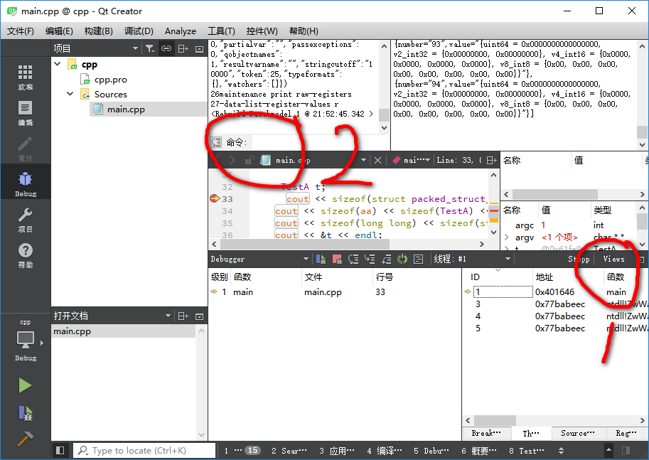
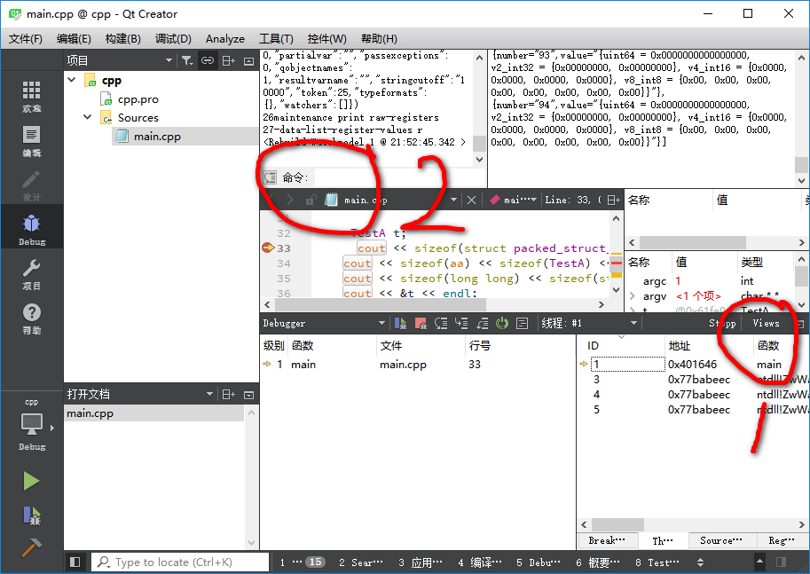

图形界面的调试与命令行调试相比方便了很多，但也受到了很多的限制。一些很方便的调试命令在图形界面 中无法使用，无形中增加了调试的复杂。下面简单说下如何在Qt creator中调出gdb的命令输入接口。
- 首先点击1处的按钮view，在弹出的对话框中选中 debug log，在《调试》中时才有此选项（qt 5.9）。 即可显示处gdb 调试日志及命令输入接口。
- 接下来就可以在2处的输入窗口处输入gdb的命令进行调试。
2018年11月29日 22:02:43
图形界面的调试与命令行调试相比方便了很多，但也受到了很多的限制。一些很方便的调试命令在图形界面 中无法使用，无形中增加了调试的复杂。下面简单说下如何在Qt creator中调出gdb的命令输入接口。
2018年11月29日 22:02:43
最近在做一个开发项目的时候，发现一位老师在调试程序的时候使用gdb命令调用程序中的某一函数，使函数运行，或许函数的运行 结果。感觉这种方法挺不错的。
既然可以在调试过程中调用被调试程序中的函数，那么我们就可以在程序中专门写一些输出程序状态的函数，这些函数不影响程序的 内部状态。所以不会对程序造成影响。这样当我们调试程序时，如果我们想要了解程序的一些状态，而又不能通过端点，等方法获取 到当前程序的状态，那么我们就可以通过调用这些函数来获取当前程序的状态，非常有利于当前程序的调试与排错。
2018年11月29日 22:12:19
在嵌入式程序开发中，一般我们调试程序会通过远程调试的方式。下面简单介绍一下gdb远程调试的方法。主要是使用 gdbserver通过网络调试的两种方式。
第一种的执行命令如下：gdbserver 192.168.253.130:2333 test,执行过此命令后，会打印出如下信息：
Process /home/viistart/deb/test created; pid = 44450
Listening on port 2333
此时gdbserver监听端口2333等待来自gdb的连接。
可通过如下方式使gdb连接gdbserver：首先输入gdb进入gdb命令输入窗口,然后输入target remote 192.168.
253.130:2333.此时如果成功连接gdbserver，则gdbserver端会输出如下信息：
Remote debugging from host 192.168.253.1, port 59728
现在就可以在gdb命令输入窗口输入命令进行调试了。
第二种调试方式，是当我们想要远程调试一个运行中程序的方法。我们需要通过 ps -aux | grep test找出想要调试
的程序的pid。
viistart 44490 0.0 0.0 2308 824 pts/0 S+ 21:49 0:00 ./test
然后通过下列命令启动gdbserver:gdbserver --attach 192.168.253.130:2333 44490.如果没有错误就可以等待gdb的
连接了。
如果调试过程中，想要浏览源代码。则源代码需要在gdb运行所在的目录。否则会提示找不到相关文件。
2018年11月30日 21:54:39